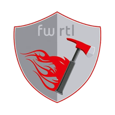

AtemschutzüberwachungASÜ
Atemschutztrupps registrieren, Einsatzzeiten und Druck überwachen, Protokoll als PDF.
Öffnen →MehrfachereignisseTestAufträge & Ereignisbewältigung
Ereignis eröffnen, Aufträge erfassen, Status verfolgen, Personal und Mittel disponieren.
Öffnen →LagekarteLageskizzen auf der Landeskarte
Symbole setzen, Rettungsachse, Sperrzone und Umleitung einzeichnen, swisstopo-Karte und Luftbild.
Öffnen →
Als App installieren: iPhone/iPad: in Safari «Teilen» → «Zum Home-Bildschirm».
Android: Chrome-Menü ⋮ → «App installieren». Die einzelnen Apps zuerst einmal mit Internet öffnen,
damit sie auch offline laufen.